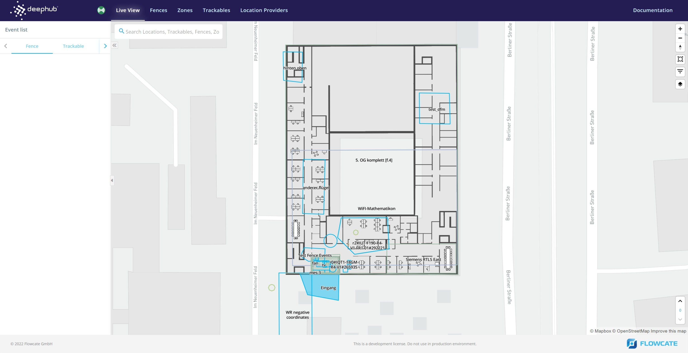

Docker and Docker Compose
Using Docker or Docker Compose on Windows and Linux is done via a command line shell and is almost identical on both platforms. You can use PowerShell or Command Prompt on Windows and a shell like bash or zsh on Linux. Refer to DeepHub System Prerequisites for details.
Using Docker or Docker Compose
We recommend using Docker Compose because this way you will get a completely configured “system” consisting of the DeepHub®, the DeepHub® UI and a containerized web server, acting as a reverse proxy, to simplify the overall usage and interaction of these components.
We provide a Docker Compose file that configures the necessary orchestration between these three containers. Refer to the next section in this documentation concerning more details on this.
Nevertheless, you are able to pull just the Docker container that you need instead of all three.
docker pull flowcate/deephub:<tag of release you want to pull>
Note
The DeepHub® itself, as well as the corresponding DeepHub® UI, are available at the official docker repository here: Flowcate@docker.
Getting the Latest Docker Compose File
We provide a docker-compose.yml file and additional configuration files for orchestration of the DeepHub® itself, as well as the corresponding DeepHub® UI, in our Github repository: Flowcate@github.
We recommend creating a dedicated local directory on your filesystem where you store the docker-compose.yml and the aforementioned configuration files. The DeepHub® needs to create some additional files during operations and writes them to directories mounted from your host filesystem. This is done relative to the location of the docker-compose.yml file.
Start a DeepHub®
Open a shell (PowerShell or Command Prompt on Windows, a terminal on Linux)
Change to the directory where your docker-compose.yml file resides. Docker Compose won’t work if invoked outside this directory.
Invoke Docker Compose. It will take a few minutes to download the Docker images and set up the DeepHub®.
Example:
cd <directory where the docker-compose.yml is>
docker-compose up -d
Note
On Linux, it may be necessary to call docker-compose as superuser via the sudo command.
Now you have your own running DeepHub® instance that can be accessed with any modern web browser at the address: http://localhost:8081
To complement the DeepHub UI shown above, you may also make API calls to the DeepHub REST API while running the DeepHub locally. This can be done with a tool such as Postman or cURL.
The containerized web server included in the Docker Compose bundle acts as a reverse proxy - forwarding requests to either the DeepHub UI or DeepHub containers.
To interact with the REST API, you will need to use the following baseURL: http://localhost:8081/deephub/v1
For example, retrieve an array of all zones:
curl http://localhost:8081/deephub/v1/zones/summary | json_pp
Stop a running DeepHub®
Please make sure you are in the same directory where you invoked docker-compose.
To stop a running DeepHub®, execute ‘docker-compose down’. This ensures the running DeepHub® is stopped and allows the user to modify the configuration data.
cd <directory where the docker-compose.yml is>
docker-compose down
Note
On Linux, it may be necessary to call docker-compose as superuser via the sudo command.